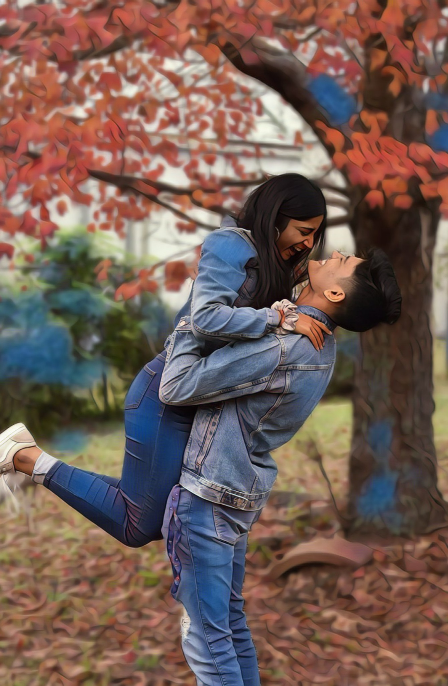
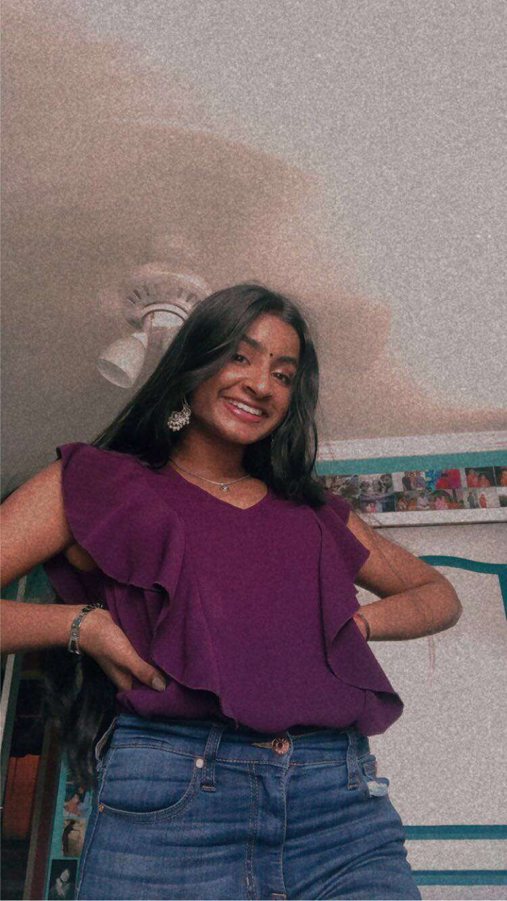
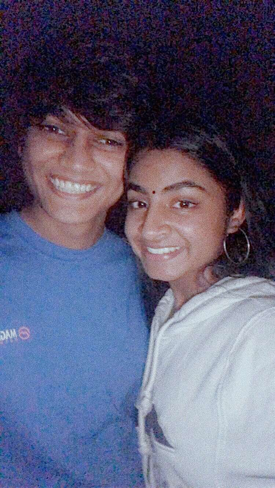
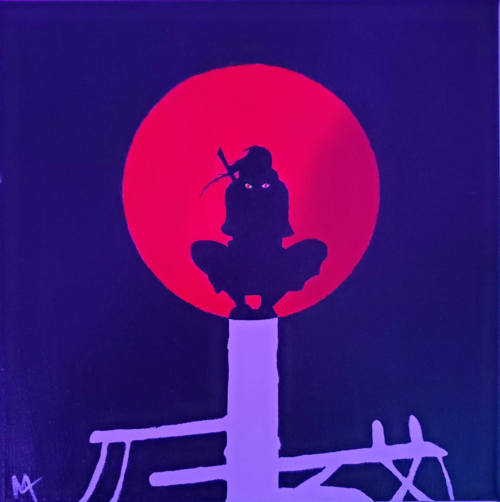
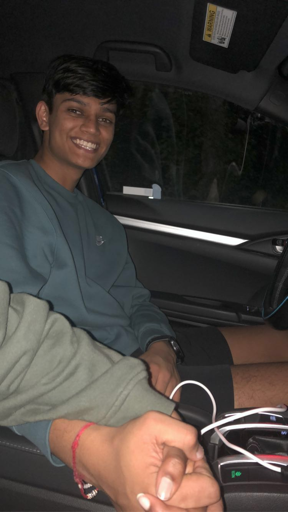
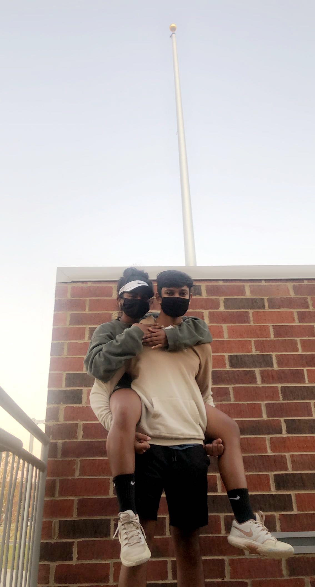
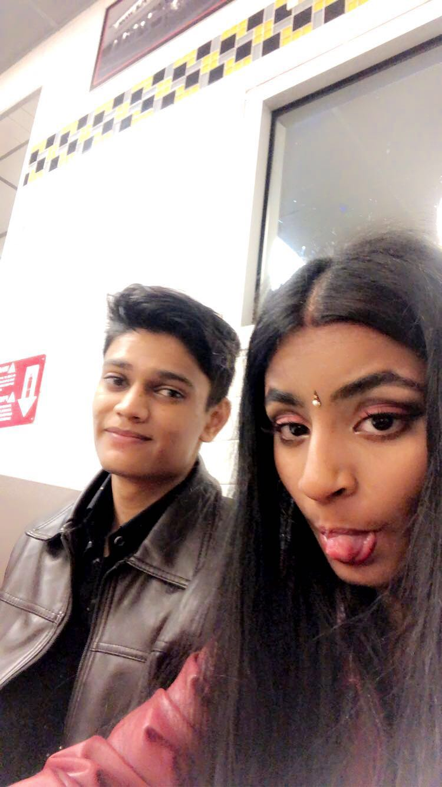
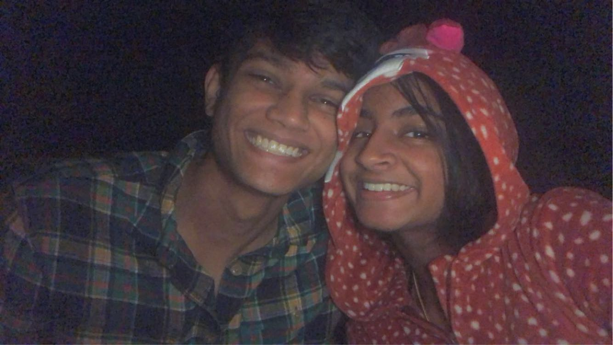
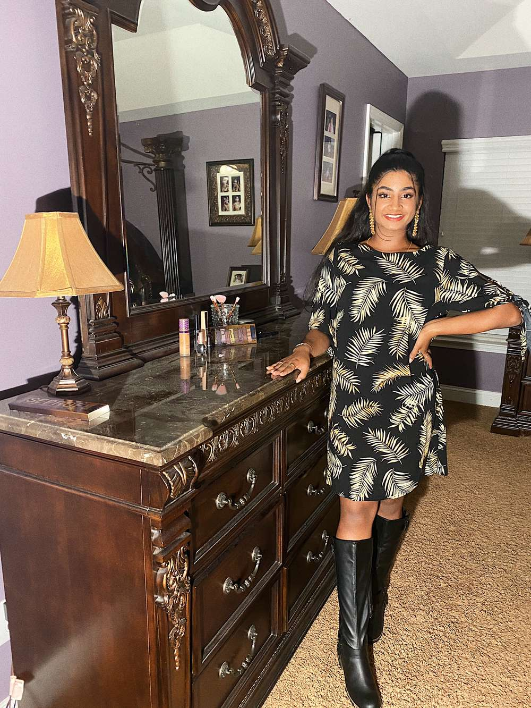

{kind=link}
My favorite picture of us :)
I love this picture of us, it shows how happy we truly are when we are together and with each other.
{kind=link}
The first picture.
This is the first picture I ever saved of her on my phone.
{kind=link}
The first time.
August 31st, the first time I met her, the first time I fell in love.
{kind=link}
Talents
When I tell you, I have never met someone as talanted as her ever in my life. She is good at almost every sport, she dances, and SHE CAN PAINT. She made me this painting and I love it.
{kind=link}
iykyk ;)
A picture of us holding hands ;) look at that smile, she makes me the happiest, her thought alone puts a smile on my face, but when she is with me, it is heavenly.
{kind=link}
Our First (10.08.2020)
{kind=link}
The first month :) I went to her tennis game, on our first month, and YES she won! One of the best days of my life. (click picture to reveal the letter)
Too pure

This is her sleeping, not trying to be dramatic, but I would give my life for her without hesitation. This is when I realized that I have something, I have someone who I can trust and love without limits. This person is who I need to keep safe, and that is what I will do, keep her safe and the happiest I can.
{kind=link}
Halloween 2020 (11.01.2020, morning)
{kind=link}
This is the night, when I asked her out again, in-person LOL. A great night, she said YES again! (Click picture to reaveal letter)
{kind=link}
Our Second (11.08.2020)
This was an unpexcted night, we were not going to meet but we still met. It was an amazing night, just spent time with her, which is my favorite thing to do. Also look how cute she looks in that Onesie, "mew mew".
{kind=link}
Her 😍
{kind=link}
This is her. I will never get enough of her, I always look forward to waking up next to her. Her smile, that smile is beyond heavenly, it makes me want to do better and work harder to keep it on her face every second of her life. Her long beautiful hair, oh man, when she lets them loose, it reminds me of freedom, as long as shes with me, she can do whatever she wants and I will support her decisions. Her bindi, when she puts that bindi on in the mornings, it just looks so beautiful on her, I love it! Her voice, when she says "baby" or call to me, it just hits very different, it feels like I belong, I belong to her. And her as a whole, she is perfect ;). I love you.
Halloween 2020 (11.01.2020, morning)
This is the night, when I asked her out again, in-person LOL. A great night, she said YES again! (Click picture to reaveal letter)